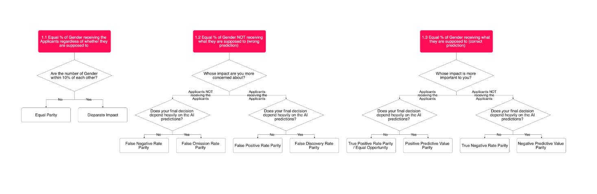

Understand Fairness Metrics
Today, there are more than 20 fairness metrics that cannot be all satisfied altogether [1]. The challenge then, is to provide a methodology that can assist in selecting the most appropriate fairness metric(s) to use in the use case. We called this the Fairness Metrics Selection problem.
In this guide, we will describe the list of fairness metrics available to use for both binary and multiclass classification. Then, we will describe our approach to our fairness decision tree, which is developed to address the Fairness Metrics Selection Problem in AI Verify.
This guide is beginner-focused, but it assumes a basic understanding of terminologies in in data science. We will briefly cover in the next section.
Confusion Matrix
Most fairness metrics are calculated based on the performance measurement for classification models (sometimes placed in a form of matrix called confusion matrix).
In a binary classification model, this can be easily calculated with two outcomes. Typically, positive outcomes are denoted as 1 and negative outcomes are denoted as 0. Any predicted outcomes that are not predicted positively or negatively (wrong predictions) are false positives and false negatives respectively while any predicted outcomes that are predicted correctly (correct predictions) are true positives and true negatives. This is shown in the table below.
| Class | Description | Meaning |
|---|---|---|
| True Positives (TP) | Both actual class and predicted value are positive. | Correct Prediction |
| True Negatives (TN) | Both actual class and predicted value are negative. | Correct Prediction |
| False Positives (FP) | The actual class is negative, but the predicted value is positive. | Wrong Prediction |
| False Negatives (FN) | The actual class is positive, but the predicted value is negative. | Wrong Prediction |
In a multiclass classification model where there are more than two outcomes, the performance measurement needs to be computed concerning a particular class. In a multiclass classification model predicting whether an image is a cat, dog and mouse, the calculation for cat is shown in the table above.
| Class | Description | Meaning |
|---|---|---|
| True Positives (TP) | The actual value and predicted value are both cat. | Correct Prediction |
| True Negatives (TN) | The actual value and predicted value are both NOT cat. | Correct Prediction |
| False Positives (FP) | The actual value is NOT cat, but the predicted value cat. | Wrong Prediction |
| False Negatives (FN) | The actual value is cat, but the predicted value is NOT cat. | Wrong Prediction |
| - | ||
| This calculation will be repeated for other classes (e.g., two separate measurements for dog and mouse using the same logic above). |
Fairness Metrics in AI Verify
There are more than 20 fairness metrics in the literature. However, some metrics are task-specific (e.g., steorotype can only be computed in NLP tasks) while some are more abstract to be understood and used in operation (e.g., sufficiency). In AI Verify, we have selected 10 commonly used fairness metrics.
| Metrics | Definition |
|---|---|
| False Negative Rate Parity | The difference between two groups based on the percentage of incorrect predictions among the actual negative values. |
| False Positive Rate Parity | The difference between two groups based on the percentage of incorrect predictions among the actual positive values. |
| False Discovery Rate Parity | The difference between two groups based on the percentage of incorrect predictions among those that are predicted as positive. |
| False Omission Rate Parity | The diffrence between two groups based on the percentage of incorrect predictions among those that are predicted as negative. |
| True Positive Rate Parity | The difference between two groups based on the percentage of correct predictions among the actual positive values. |
| Positive Predictive Value Parity | The difference between two groups based on the percentage of correct predictions among the labels that are predicted as positive. |
| Negative Predictive Value Parity | The difference between two groups based on the percentage of correct predictions among the labels that are predicted as negative. |
| Equal Selection Parity | The difference in the number of positive predictions between the subgroups |
| Disparate Imapct | The ratio in the number of positive predictions between the subgroups |
Fairness Decision Tree
We adapted Aequitas Fairness Tree [2] to make it easier for our users to understand in selecting their fairness metrics.
 (Click here to view the full image)
{kind=link}
There are three guided questions:
| Guided Questions | Options | Rationale |
|---|---|---|
| What do you consider to be fair in your use case? | a. Equal representation b. Wrong predictions c. Correct Predictions |
To assist the user in identifying the overarching concern in this particular use case |
| Whose impact are you more concerned about? | a. Is it qualified group not receiving opportunity? b. Is it unqualified group receiving opportunity? c. Is it qualified group receiving opportunity? d. Is it unqualified group not receiving opportunity? |
To assist the user in choosing the most concerning consequence in this use case |
| Does your final decision depends heavily on the model? | a. Yes b. No |
To determine whether we should prioritise the model's predictions or the actual true value as the demoniator |
Example Use Case
- Use Case: Job Application Prediction Model
- Description: To predict whether this individual will get the job
- Sensitive Attribute: gender
- Qualified people: Qualified candidates
- Disqualified people: Unqualified candidates
| Guided Questions | Rationale |
|---|---|
| What do you consider to be fair in your use case? | [Correct Prediction] Offering the job to qualified candidates is more important |
| Whose impact is more important to you? | [Qualified people receiving opportunity] Offering the job to qualified candidate is more important than ensuring that unqualified candidates are rejected as hiring the correct candidate is the objective |
| Does your final decision depend heavily on the model? | [No] There is a human-in-the-loop decision making process. |
Final Relevant Metrics: True Positive Rate Parity
Reference
[1]: The Impossibility of Theorem of Machine Fairness: A Casual Perspective. https://arxiv.org/pdf/2007.06024.pdf
[2]: Aequitas. http://www.datasciencepublicpolicy.org/our-work/tools-guides/aequitas/